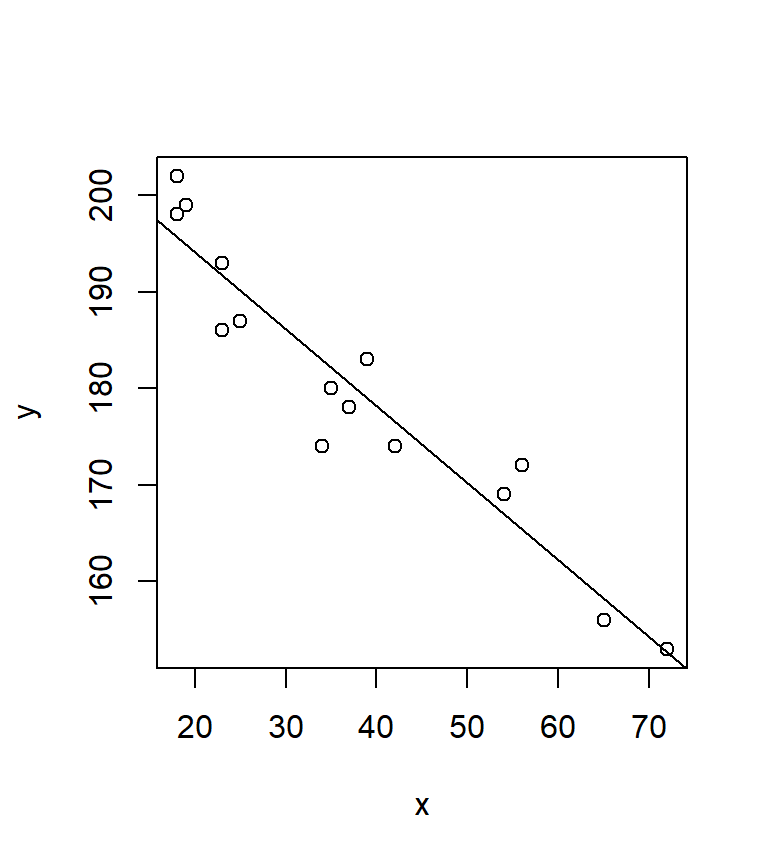
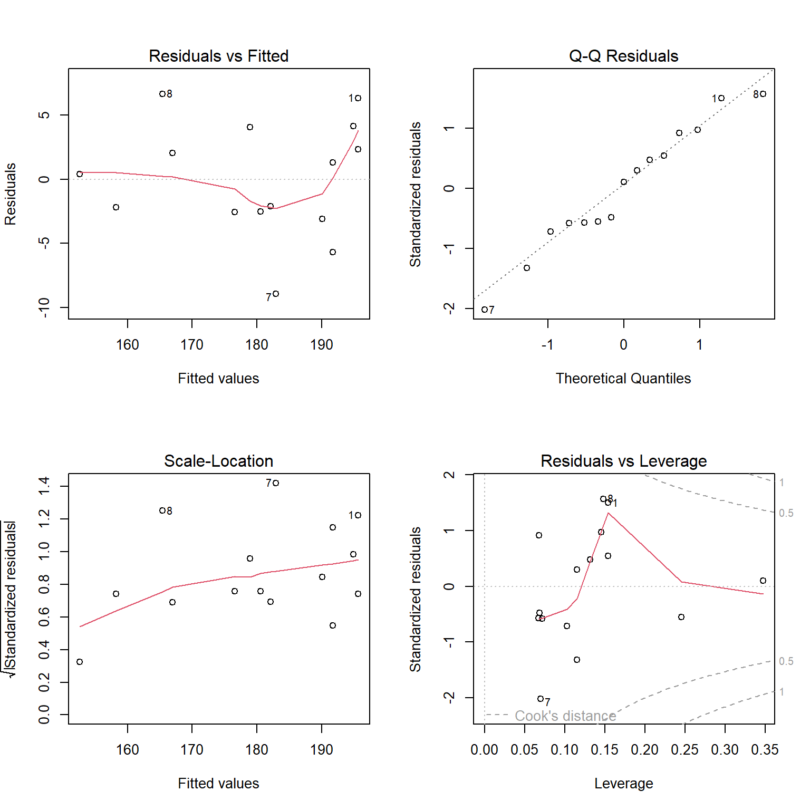
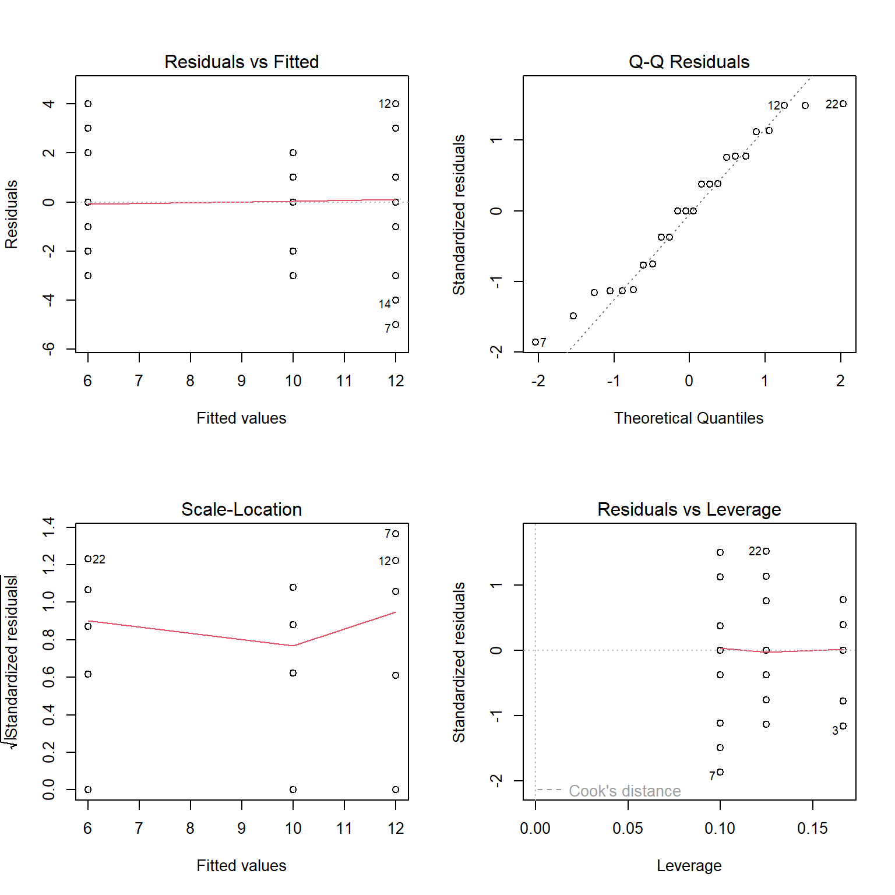

Chapter 9 Simple data analysis in R
R is a free software environment for statistical computing and graphics.
The stats package, which is automatically loaded when R starts up, contains
functions for statistical calculations and random number generation. For a
complete list of functions, see library(help = stats).
9.1 \(t\) tests
Code
# One-sample t test
rt <- rnorm(100, mean = 400, sd = 20)
t.test(rt, mu = 400)
# Two-sample t test for independent groups
t.test(weight ~ group, PlantGrowth[PlantGrowth$group != "ctrl", ],
var.equal = TRUE)
# Two-sample t test for dependent groups
sleep2 <- reshape(sleep, direction = "wide", idvar = "ID", timevar = "group")
## Traditional interface
t.test(sleep2$extra.1, sleep2$extra.2, paired = TRUE)
## Formula interface
t.test(Pair(extra.1, extra.2) ~ 1, data = sleep2)9.2 Linear models
Let us first fit a simple linear regression.
Code
dat <- data.frame(
x = c(18, 23, 25, 35, 65, 54, 34, 56, 72, 19, 23, 42, 18, 39, 37),
y = c(202, 186, 187, 180, 156, 169, 174, 172, 153, 199, 193, 174, 198, 183, 178)
)
lm1 <- lm(y ~ x, dat)
plot(y ~ x, dat)
abline(lm1)
Code
coef(lm1)
predict(lm1)
resid(lm1)
names(lm1)
summary(lm1)Code
# model diagnostics
par(mfrow = c(2, 2))
plot(lm1)
9.3 Analysis of Variance (ANOVA)
An ANOVA is just a special case of a regression where all predictors are
categorical. Using the function aov() instead of lm() gives us
different results for the extractor functions.
Code
dat <- read.table(text = "
id group score
1 control 8
2 control 12
3 control 7
4 control 10
5 control 11
6 control 12
7 pro 7
8 pro 9
9 pro 15
10 pro 13
11 pro 11
12 pro 16
13 pro 12
14 pro 8
15 pro 13
16 pro 16
17 contra 4
18 contra 5
19 contra 6
20 contra 3
21 contra 8
22 contra 10
23 contra 3
24 contra 9
", header = TRUE)
aov1 <- aov(score ~ group, data = dat)
summary(aov1)We can again look at the model diagnostics.
Code
# model diagnostics
par(mfrow = c(2, 2))
plot(aov1)